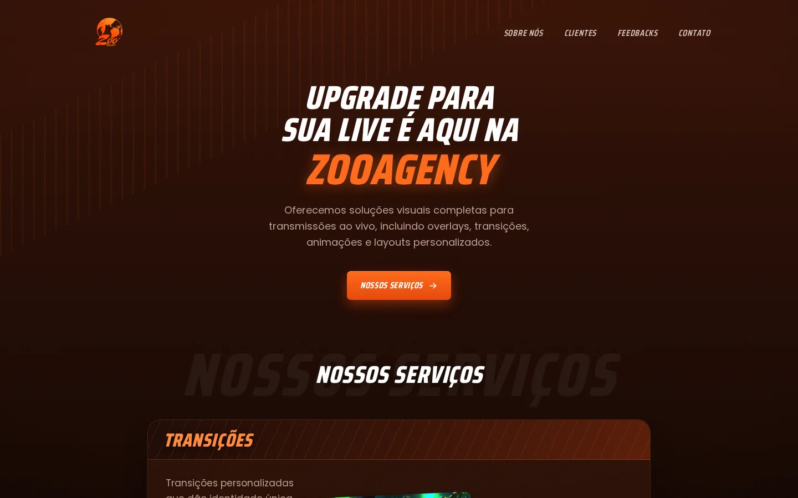
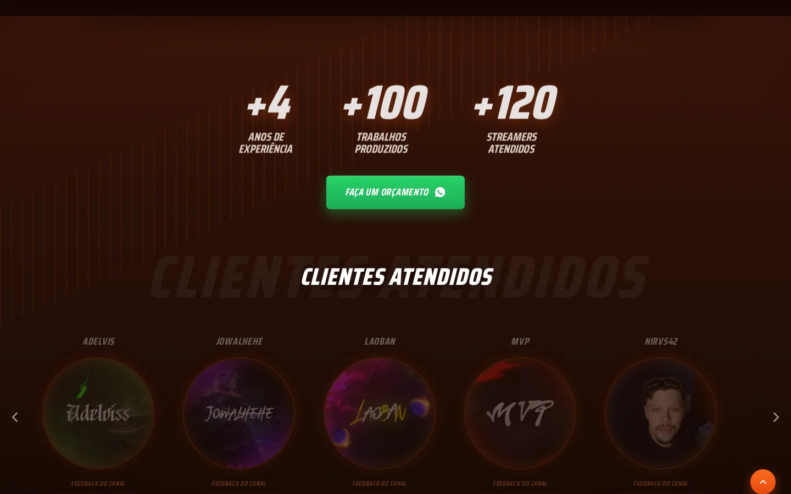

Case · Landing page
Zoo Agency: uma landing page tão rápida quanto o negócio que ela vende
Landing page institucional para a Zoo Agency, agência de design gráfico especializada em transmissões ao vivo (overlays, transições, telas animadas, emotes, streampacks e caricaturas).

Contexto
A Zoo Agency é conduzida por Klinsmann Santana ("Coruja"), designer gráfico especializado em experiências visuais para lives, e Beatriz Silva ("Coelha"), artista digital especializada em emotes e distintivos. O negócio inteiro depende de mostrar qualidade visual — a landing page precisava ser, ela mesma, uma prova disso.
O problema
- Sem uma vitrine própria que reunisse portfólio, serviços e prova social num só lugar.
- Para uma agência de design, qualquer lentidão ou aparência genérica no próprio site mina a credibilidade.
- Orçamento e contato precisavam ser diretos, sem fricção — o público já está acostumado ao WhatsApp/Discord.
A solução
Uma página única, rápida e sem dependência de terceiros além das fontes, com carrosséis reais de portfólio e depoimentos de clientes.
- Carrossel de serviços — demonstração real de cada serviço (overlays, transições, telas, emotes, streampacks, caricaturas).
- Clientes atendidos — carrossel com canais reais e player de áudio de feedback.
- Depoimentos reais — feedbacks de streamers atendidos, com nome do canal.
- Imagens trocáveis — Web Component próprio (
<image-slot>) para a dupla trocar artes sem mexer em código.
O produto em uso

Resultados
Engenharia
Sua marca também vive de mostrar qualidade visual?
Conte o cenário e voltamos em até um dia útil com os próximos passos.
Falar sobre meu projeto